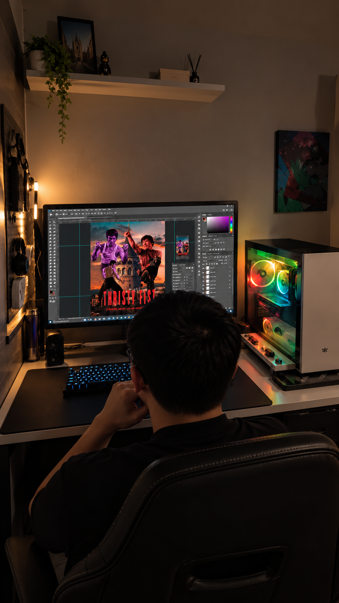

PERSONAL PORTFOLIO · 2026
Hello, I'm Ducs.
I create, design, and build digital experiences.
A collection of work shaped by curiosity, visual storytelling, and technology.
01 / MY WORKS
My Works.
Explore projects across four creative disciplines.
02 / ABOUT ME
A little about me.
I'm Jhory A. Ducog, a customer service and operations professional with interests in graphic design, web and game development, voxel art, and photography.
Alongside my professional work, I pursue creative projects that combine visual design and technology. I enjoy learning new tools, exploring ideas, and turning concepts into thoughtful visual experiences.

03 / CONTACT
Let's connect.
Have a project, opportunity, or just want to say hello?